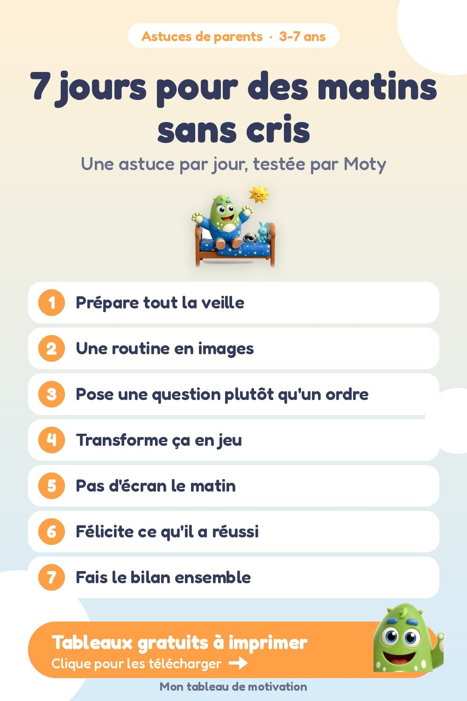

3-7 ans
7 jours pour des matins sans cris
- Prépare tout la veilleVêtements posés sur la chaise, cartable près de la porte. Le soir, tu as le temps. Le matin, non.
- Une routine en imagesIl ne sait pas encore lire : un tableau en images lui montre quoi faire… sans que tu répètes 10 fois.
- Pose une question plutôt qu'un ordre« Qu'est-ce qui vient après le petit-déjeuner sur ton tableau ? » marche mieux que « Va t'habiller ! »
- Transforme ça en jeu« Tu crois que tu peux mettre tes chaussures avant la fin de la chanson ? » Le jeu remplace la pression.
- Pas d'écran le matinUn dessin animé le matin, c'est l'habillage qui bloque et une crise pour l'éteindre. Sans écran avant l'école, tout va plus vite.
- Félicite ce qu'il a réussi« Tu t'es habillé tout seul, on est prêts à l'heure ! » Il sait exactement ce qu'il a bien fait.
- Fais le bilan ensembleEn fin de semaine, comptez les étoiles et choisissez la récompense ensemble. Il voit le chemin parcouru… et toi aussi.